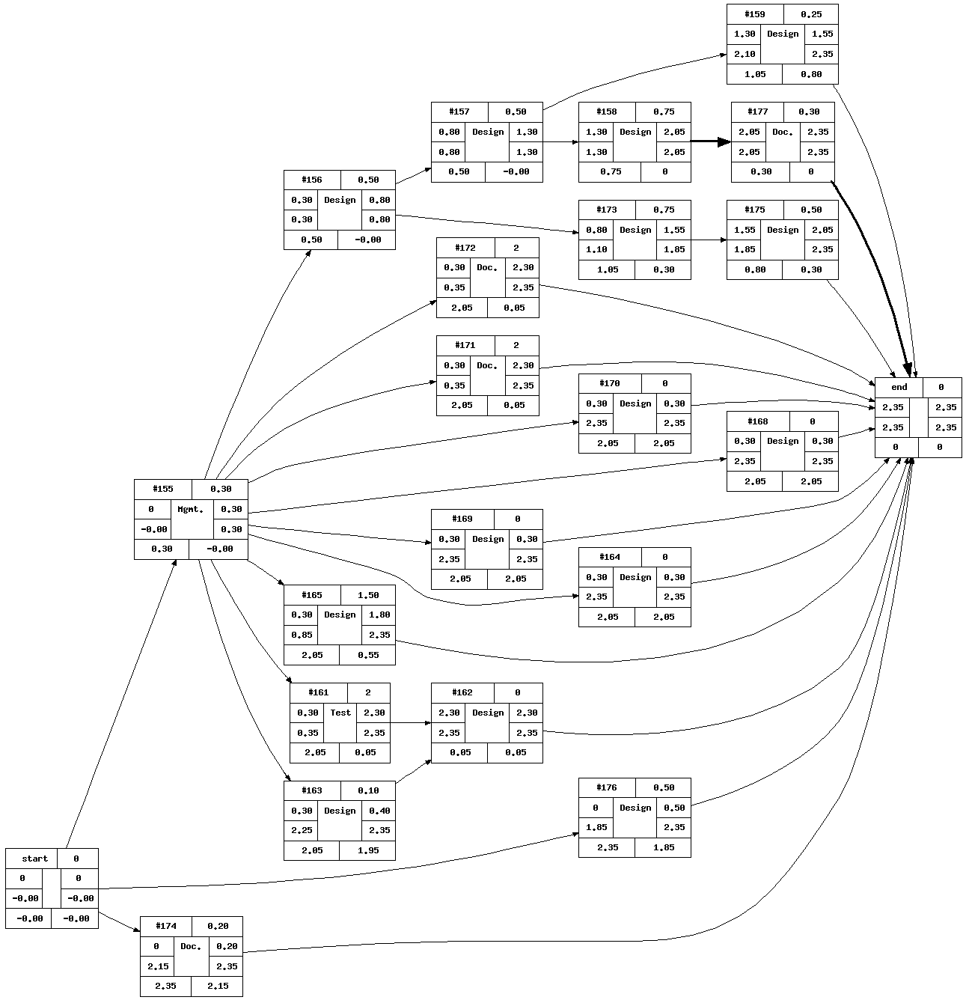
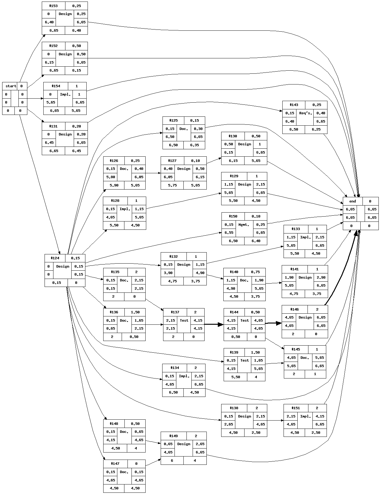
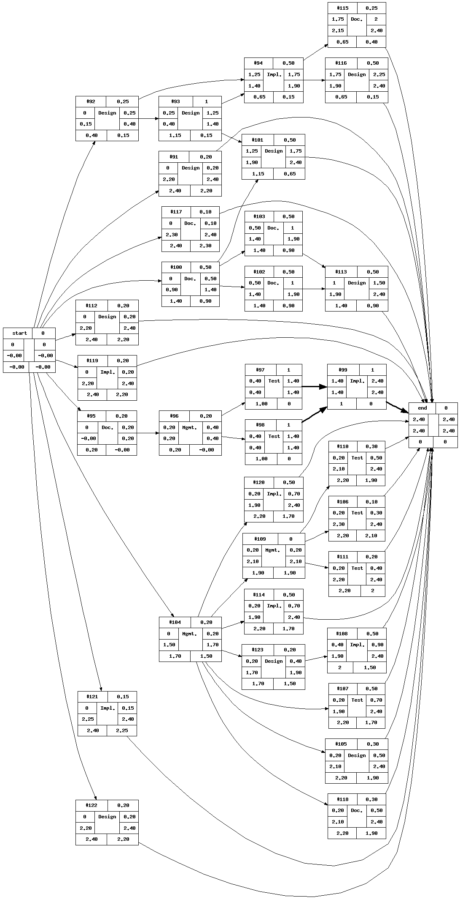
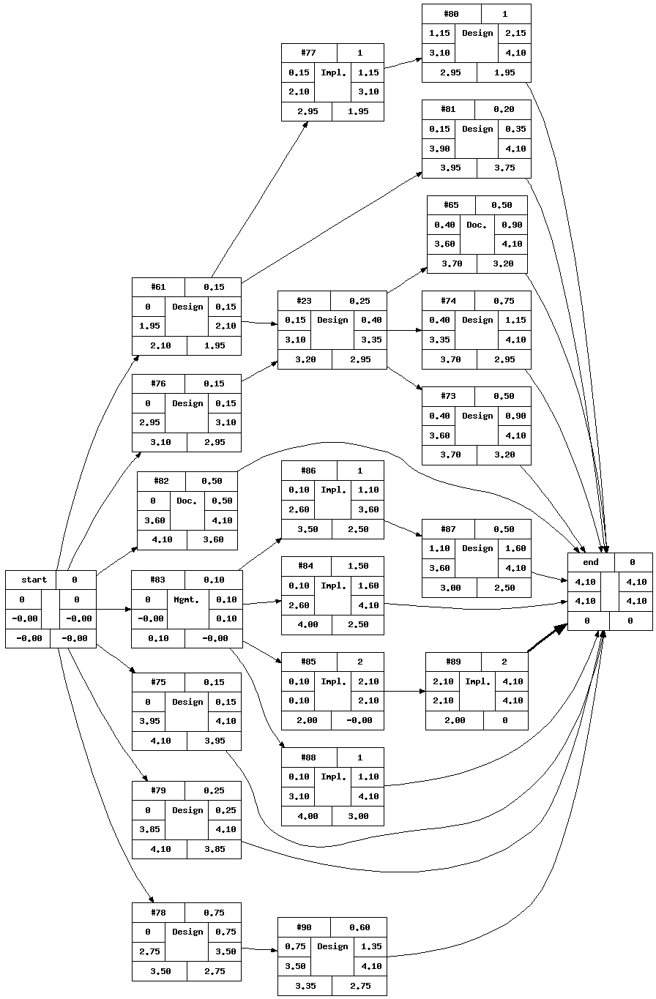
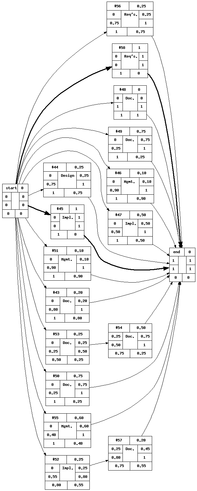

Activity Plan
Iteration 3B

Legend:
| Id | Title | Duration | Precedents | Owner |
| #155 | Management: Activity Planning Milestone 5B | None | c_kara | |
| #156 | Design: Finish Boogie AST and create BoogieAST Visitor | None | 155 | leveda |
| #157 | Design: Create a "declaration finder" visitor | None | 156 | leveda |
| #158 | Design: Symbol Table | None | 157 | l_sega |
| #159 | Design: Update the Class diagram in logical view | None | 157 | leveda |
| #161 | Testing: Benchmark tests with more machines for Lab Report | None | 155 | c_sheu |
| #162 | Design: Write the lab report | None | 161, 163 | r_leguen |
| #163 | Design: Time Adapters | None | 155 | c_sheu |
| #164 | Design: Update Test Plan | None | 155 | n_grigo |
| #165 | Design: Research how to write directly to an Isabelle Process | None | 155 | c_sheu |
| #168 | Design: Research RAM disks | None | 155 | j_fora |
| #169 | Design: Document changes to core made for caching | None | 155 | j_fora |
| #170 | Design: Check if Loren's merged-with-sourceforge code breaks distro | None | 155 | n_grigo |
| #171 | Documentation: Create Process View draft for Distributed Project | None | 155 | n_grigo |
| #172 | Documentation: Create Deployment View draft for Distributed project | None | 155 | n_grigo |
| #173 | Design: Refactor BoogieVisitor? | None | 156 | l_sega |
| #174 | Documentation: Status Report | None | c_kara | |
| #175 | Design: write initial tests | None | 173 | j_fora |
| #176 | Design: setup workspace (Boogie adapter tests should pass) | None | j_fora | |
| #177 | Documentation: Document changes to code to include sybol table | None | 158 | l_sega |
Iteration 5A

Legend:
| Id | Title | Duration | Precedents | Owner |
| #124 | Design: Activity Planning Milestone 5A | None | r_leguen | |
| #125 | Documentation: Update I&C with Boogie Installation | None | 124 | l_sega |
| #126 | Documentation: Initialize the html page w/template | None | 124 | l_sega |
| #127 | Design: maintain html page | None | 126 | c_kara |
| #128 | Implementation: Write Boogie Translation Tests for High Priority AST Nodes | None | 124 | leveda |
| #129 | Design: Implement High Priority Boogie Visitor methods | None | 128 | l_sega |
| #130 | Design: Complete Boogie Adapter Tests for High Priority AST Nodes | None | 127 | leveda |
| #131 | Design: Boogie Sequence Diagram | None | c_kara | |
| #132 | Design: Propose and Design Isabelle Adapter Changes | None | 124 | c_sheu |
| #133 | Implementation: Implement Isabelle Adapter Changes | None | 132 | c_sheu |
| #134 | Implementation: Propose Throttle the Dispatcher | None | 124 | n_grigo |
| #135 | Documentation: Plan Construction of "The Long, Slow Test" | None | 124 | n_grigo |
| #136 | Documentation: Determine Usable ESC/Java2 Tests Based on the Scope of ESC4 | None | 124 | r_leguen |
| #137 | Testing: Write "The Slow, Long Test" | None | 135, 136 | n_grigo |
| #138 | Design: Propse and Design Caching Solution | None | 124 | j_fora |
| #139 | Testing: Run Tests of Original ESC4 Web (including old core) and new | None | 124 | c_sheu |
| #140 | Documentation: Fill in Details in Use Case Model | None | 132 | r_leguen |
| #141 | Design: Propose and Design Configuration Interface for Servers | None | 140 | r_leguen |
| #143 | Requirements: SRS Needs to Reflect Physical Server Setup Reqs | None | 124 | r_leguen |
| #144 | Testing: Run the Slow, Long Test | None | 137 | n_grigo |
| #145 | Documentation: Write a Lab Report on the Results from the Long, Slow Test | None | 144, 139 | c_sheu |
| #146 | Design: Debug, Tweak and Perfect the Load Balancing | None | 144 | r_leguen |
| #147 | Documentation: Meet with Doctor Chalin | None | 124 | r_leguen |
| #148 | Documentation: Meet with Doctor Constantinides | None | 124 | r_leguen |
| #149 | Design: Write the Impact Analysis Document | None | 147, 148 | c_sheu |
| #150 | Management: Meeting Minutes from Perry Meeting on Jan 26th | None | 124 | r_leguen |
| #151 | Implementation: Implement More Complete Caching Solution | None | 138 | j_fora |
| #152 | Design: Big ESC test suite | None | leveda | |
| #153 | Design: Boogie Design and Refactoring Meeting | None | c_kara | |
| #154 | Implementation: SVN Merge with sourceforge code | None | l_sega |
Iteration 4B

Legend:
| Id | Title | Duration | Precedents | Owner |
| #91 | Design: Activity Plan for 4B - Boogie Team | None | c_kara | |
| #92 | Design: Meeting about Boogie Design | None | l_sega | |
| #93 | Design: Document Design Decisions for Boogie | None | 92 | c_kara |
| #94 | Implementation: Refactor Boogie Code | None | 92, 93 | l_sega |
| #95 | Documentation: Meeting Notes | None | leveda | |
| #96 | Management: Update Priority List Of AST Nodes | None | 95 | c_kara |
| #97 | Testing: Write translation tests for high priority nodes | None | 96 | l_sega |
| #98 | Testing: Write adapter tests for high priority nodes | None | 96 | leveda |
| #99 | Implementation: Implement High Priority AST Node Traversal Methods in the BoogieVisitor? | None | 98,97 | l_sega |
| #100 | Documentation: Impact Analysis Template | None | c_kara | |
| #101 | Design: Impact Analysis - Boogie | None | 93, 100 | leveda |
| #102 | Documentation: Impact Analysis - Serialization Improvements in M4 | None | 100 | c_sheu |
| #103 | Documentation: Impact Analysis - Improvements on the Isabelle Adapter | None | 100 | c_sheu |
| #104 | Management: Create Tickets for 4B | None | n_grigo | |
| #105 | Design: Reassess the algorithm to reflect the TPTP info | None | 104 | j_fora |
| #106 | Testing: Ensure Tomcat works on all 4 machines | None | 109 | n_grigo |
| #107 | Testing: Re-profile to get larger sample size | None | 104 | n_grigo |
| #108 | Implementation: Implement the load balancing algorithm | None | 123 | r_leguen |
| #109 | Management: Environment Setup perfection | None | 104 | n_grigo |
| #110 | Testing: Ensure that HUBEL is fully operational | None | 109 | c_sheu |
| #111 | Testing: Usernames and passwords on all machines | None | 109 | r_leguen |
| #112 | Design: Communication with stakeholders | None | leveda | |
| #113 | Design: Export Documents and Tag them as M4 | None | 102, 103 | l_sega |
| #114 | Implementation: Create tomcat servlet redeployment script | None | 104 | c_sheu |
| #115 | Documentation: Code Documentation - Boogie Components | None | 94 | l_sega |
| #116 | Design: Boogie Testing QA | None | 94 | l_sega |
| #117 | Documentation: Minutes from meeting with Perry | None | c_sheu | |
| #118 | Documentation: Interaction Diagram for Isabelle/Simplify adapter changes | None | 104 | c_sheu |
| #119 | Implementation: Remove proveVcPeacewise_timings from the repository | None | r_leguen | |
| #120 | Implementation: Make Externalisable code ready for patch and create | None | 104 | c_sheu |
| #121 | Implementation: SVN Merge of boogie branches with trunk | None | l_sega | |
| #122 | Design: Work on Test Plan | None | l_sega | |
| #123 | Design: Create Class Diagram for the Distribution project | None | 104 | c_sheu |
Iteration 4A

Legend:
| Id | Title | Duration | Precedents | Owner |
| #23 | Design: Use Case Model Diagram & template | None | 76, 61 | c_kara |
| #61 | Design: Project Plan for Milestone 4A (Boogie Features) | None | c_kara | |
| #65 | Documentation: Use Case Model - Admin Use Cases | None | 23 | r_leguen |
| #73 | Design: Caching Use Cases | None | 23 | n_grigo |
| #74 | Design: Developer Use Cases | None | 23 | c_kara |
| #75 | Design: Meeting Monday 15th: Plans for 4A & Role assignements | None | all | |
| #76 | Design: Meeting: Use Case Model | None | c_kara | |
| #77 | Implementation: Boogie Adapter | None | 61 | leveda |
| #78 | Design: Break Documents per milstone & general clean up | None | r_leguen | |
| #79 | Design: Branch out M3 in subversion. | None | l_sega | |
| #80 | Design: Boogie Adapter QA and testing | None | 77 | l_sega |
| #81 | Design: Development View | None | 61 | leveda |
| #82 | Documentation: Wiki Doc Exporter Script | None | l_sega | |
| #83 | Management: Create tickets for 4a Distributed Team | None | n_grigo | |
| #84 | Implementation: Investigate the Isabelle and Simplify adapters to prevent spawning new processes | None | 83 | c_sheu |
| #85 | Implementation: Investigate Xtreme serialization | None | 83 | c_sheu |
| #86 | Implementation: Integrate the Information Gathering module developed in 3b | None | 83 | r_leguen |
| #87 | Design: Write a "Smart" load balancing algorithm | None | 86 | j_fora |
| #88 | Implementation: Find a usable UDP module | None | 83 | n_grigo |
| #89 | Implementation: Improve current Seriailzation techniques | None | 85 | c_sheu |
| #90 | Design: Export documents to svn | None | 78 | r_leguen |
Iteration 3B
3.1 Activity on Node Diagram

Legend:
| Id | Title | Duration | Precedents | Owner |
| #21 | Documentation: Research Boogie; setup Boogie environment | None | l_sega | |
| #22 | Design: Class Diagrams | None | leveda | |
| #59 | Implementation: Have Prover send back CPU info and timings back to Dispatcher | None | 22, 66 | c_sheu |
| #60 | Implementation: Implement the Dispatcher and Server Processes | None | 59, 22, 66 | j_fora |
| #62 | Documentation: Logical View (Concerning Distributed) | None | 60 | r_leguen |
| #63 | Documentation: Process View (Concerning Distributed) | None | 60 | j_fora |
| #64 | Documentation: Physical View | None | 59 | c_sheu |
| #66 | Design: Write a Supplementary Specification | None | r_leguen | |
| #67 | Design: Test Plan | None | c_kara | |
| #68 | Design: Prioritize Boogie Translation Tests in a traceability matrix | None | 67 | l_sega |
| #69 | Implementation: Test Implementation | None | 68 | leveda |
| #70 | Implementation: Implementation of BoogieVisitor? & Corresponding Test Environement | None | 21 | l_sega |
| #71 | Implementation: Implementation of Initial Tests for Boogie Visitor | None | 21 | l_sega |
| #72 | Design: Update Risk Analysis | None | leveda |
Iteration 3A
3.1 Activity on Node Diagram

Legend:
| Id | Title | Duration | Precedents | Owner |
| #43 | Documentation: Meeting notes Nov 3rd | None | c_kara | |
| #44 | Design: Meeting November 3rd | None | all | |
| #45 | Implementation: Resolve issues with NIS | None | l_sega | |
| #46 | Management: Make Precedents for tickets | None | l_sega | |
| #47 | Implementation: Clean up and refactor current code | None | leveda | |
| #48 | Documentation: Add Content to Vision | None | r_leguen | |
| #49 | Documentation: Cashing Plan & Strategies | None | j_fora | |
| #50 | Documentation: Load Balancing Plan & Strategies | None | n_grigo | |
| #51 | Management: Activity Plan Generator | None | l_sega | |
| #52 | Implementation: Installation of TPTP on 4 machines | None | c_sheu | |
| #53 | Documentation: Add Measurements printed to console without profiler tool to benchmark document | None | leveda | |
| #54 | Documentation: Take data calculated w/o profiler tool, and compare with data using profiler tool | None | 53 | c_sheu |
| #55 | Management: Task Management and Ticket Generation | None | c_kara | |
| #56 | Requirements: Research xStream and other possible XML serialization | None | r_leguen | |
| #57 | Documentation: Add TPTP installation to I&C | None | 52 | c_sheu |
| #58 | Requirements: Familiarize ourselves with the code | None | all |
1. Iteration 1
1.1 Activity on Node Diagram
{kind=link}
Legend:
| Id | Title | Duration | Precedents | Owner |
| #1 | Management: Trac Setup | None | None | l_sega |
| #2 | Management: Trac Reviewer Notifications etc | None | None | l_sega |
| #3 | Management: Development Environment Setup Planning | None | None | leveda |
| #4 | Requirements: Inception - meet with Client (again) | None | None | j_fora |
| #5 | Design: Write a Vision Document | None | None | c_kara |
| #6 | Documentation: Write a Glossary | None | None | leveda |
| #7 | Documentation: Proposal | None | None | r_leguen |
| #8 | Requirements: Minutes of meeting with Mr. Perry James | None | None | n_grigo |
| #9 | Management: Executive Summary of the work carried out by each team member | None | None | r_leguen |
| #10 | Management: Risk Assessment | None | None | r_leguen |
| #11 | Management: Milestone 1 Activity Planning Diagram | None | None | l_sega |
| #12 | Management: Import Process Documentation | None | None | l_sega |